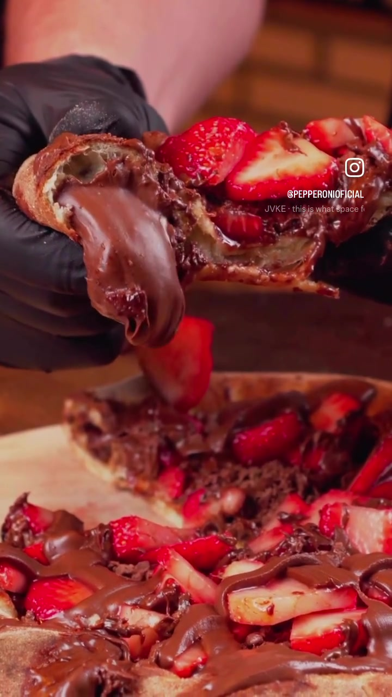

Pepperoni
2024
A experiência gastronômica em movimento, com imagens pensadas para despertar interesse pelo produto.
- Projeto
- Audiovisual para redes sociais
- Cliente
- Pepperoni
- Ano
- 2024
- Categorias
- Audiovisual
- Atuação
- Produção audiovisual
- Colaboração
- Produção terceirizada para agência
O produto conduz a cena
Produção audiovisual para a Pepperoni, com foco na apresentação dos produtos e em sua presença nas redes sociais. Enquadramento, movimento e ritmo constroem uma narrativa curta que aproxima a marca de quem está do outro lado da tela.
Produção em parceria
Trabalho realizado como serviço terceirizado para agência, com atuação na produção audiovisual. O filme integra a comunicação da Pepperoni nas redes sociais e apresenta um recorte da experiência da marca.